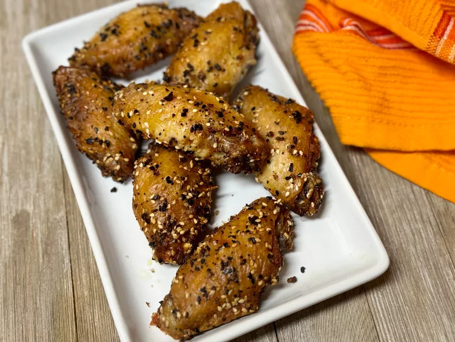

2-Ingredient Everything Bagel Chicken Wings

Description
These 2-ingredient air fryer everything bagel chicken wings are my take on easy, non-spicy wings. Perfectly seasoned, crispy on the outside, tender and juicy on the inside, and you really only need 2 ingredients.
Ingredients
- 2 pounds chicken party wings (wingettes or drumettes)
- 2 tablespoons everything bagel seasoning
Steps
- Preheat an air fryer to 390 degrees F (199 degrees C).
- Place wings in a large bowl. Sprinkle everything seasoning over the top. Using your hands, mix well until wings are evenly coated.
- Place wings in the basket of the air fryer, skin side up. Cook for 20 minutes. Shake and cook until crisp, about 3 minutes more.
Home